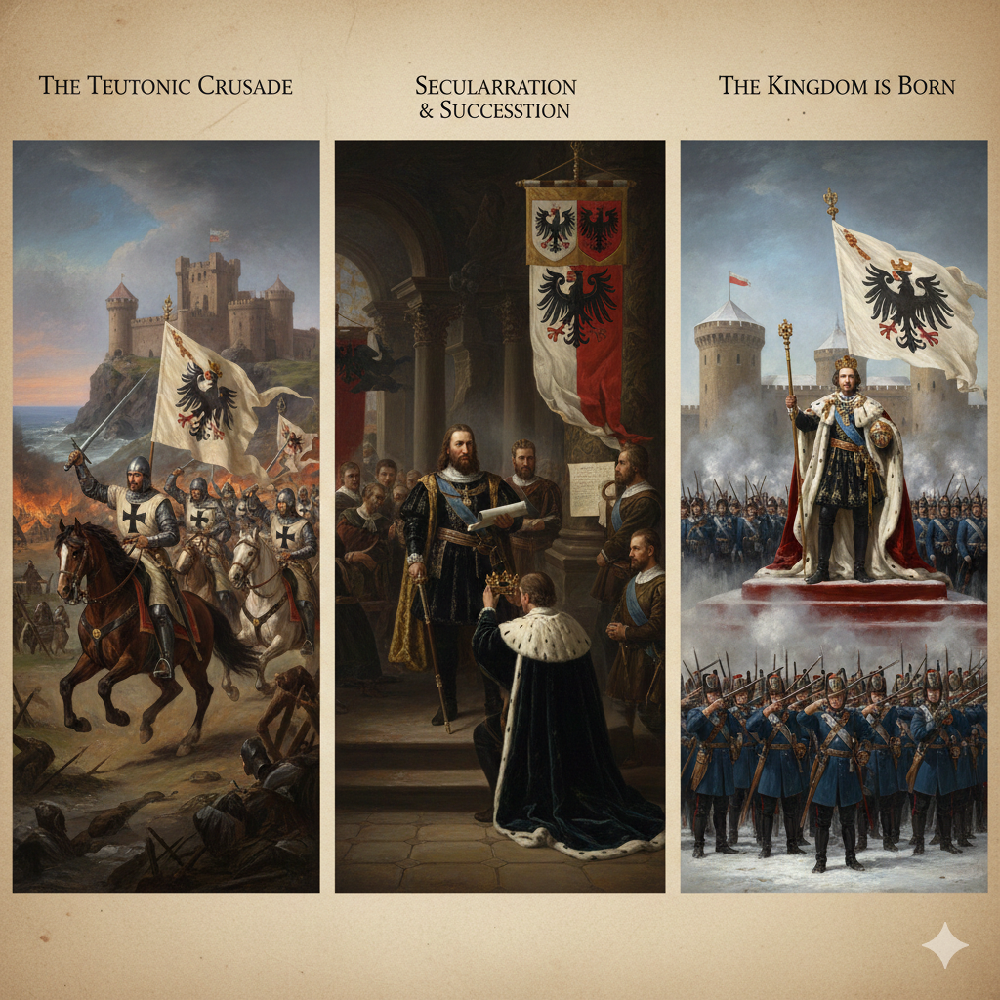
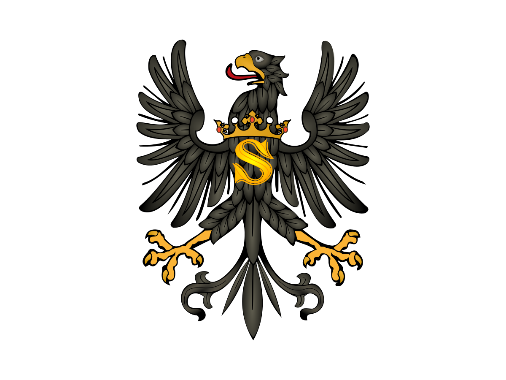
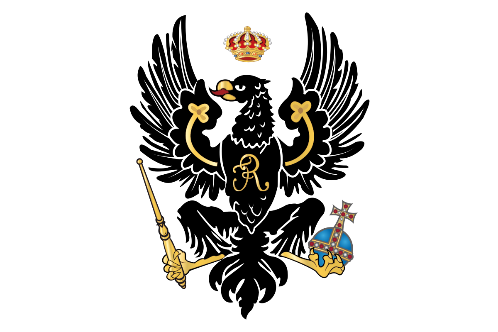
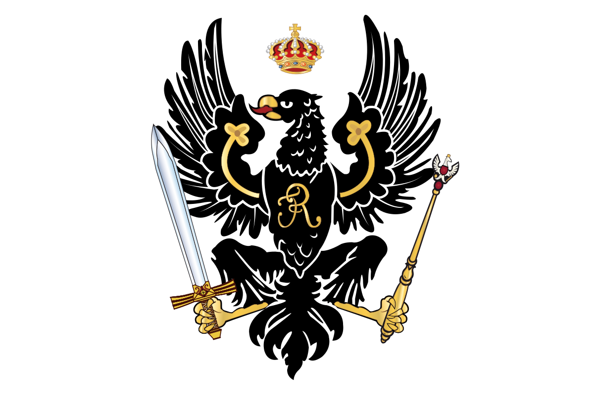

The territory of Prussia was originally inhabited by the Old Prussians, a Baltic people conquered and forcibly Christianized in the 13th century by the Teutonic Knights, a German Catholic military order. This order established a powerful theocracy that ruled the region for nearly 300 years, founding cities and developing the land through colonization. The Knights' power was broken by a Polish-Lithuanian alliance in the 15th century, leading to a large part of the territory becoming a Polish fief. This foundational state was transformed in 1525 when the last Grand Master secularized it into the Duchy of Prussia, a hereditary, secular fief under the King of Poland. The Duchy passed by inheritance to the Hohenzollern Electors of Brandenburg in 1618, creating Brandenburg-Prussia, which finally elevated itself to the Kingdom of Prussia in 1701.

Feudal Prussia
This foundational period began with the Teutonic Knights, a German Catholic military order, who launched the Prussian Crusade in the 13th century to conquer and Christianize the native Baltic tribes. The Knights established the State of the Teutonic Order (Ordensstaat), a centralized, military theocracy ruled by the Grand Master. Despite a major defeat in 1410, the Order maintained control over the eastern portion of its territory until the Reformation, which severely undermined the authority of the Catholic order and set the stage for secular rule.
The Duchy of Prussia
The Duchy of Prussia was created when the last Grand Master, Albert of Hohenzollern, secularized the monastic state and adopted Lutheranism in 1525, making it the world's first Protestant state. Initially, the Duchy was a feudal dependency of the Polish Crown. However, in 1618, it was inherited by the Hohenzollern Electors of Brandenburg, creating Brandenburg-Prussia. The crucial shift came in 1660 when the "Great Elector," Frederick William, secured full sovereignty for the Duchy through the Treaty of Oliva, laying the groundwork for the elevation of the entire state.


The Kingdom of Prussia
The state was elevated to the Kingdom of Prussia in 1701 when Frederick III crowned himself Frederick I. Under subsequent kings, especially Frederick II "the Great," Prussia became a European Great Power, celebrated for its highly disciplined standing army and efficient bureaucracy—traits that formed the core of the Prussian national character. Prussia's victory over Austria in the mid-18th century cemented its dominance among the German states. In the 1860s, Prime Minister Otto von Bismarck used military victories to force the unification of Germany, making the Prussian King the new German Emperor in 1871.
Prussia within the German Empire and Abolition
Following German unification in 1871, Prussia became the largest and most politically dominant state within the new German Empire. The Prussian King also served as the German Emperor (Kaiser), and Prussian militarism heavily influenced the new nation. The monarchy was abolished after Germany’s defeat in World War I, and Prussia continued as the Free State of Prussia—the dominant state—within the democratic Weimar Republic. However, it was dismantled by the Nazi regime in the 1930s and was formally and permanently abolished by the Allied Control Council in 1947, which viewed it as the historical embodiment of German militarism and reaction.
